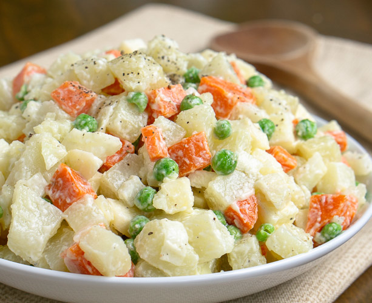

Recipe name

This Argentine salad is called "ensalada rusa" and is a popular South American dish that makes a wonderful appetizer.
- Type: Salad
- Prep Time: 20 mins
- Cook Time: 25 mins
- Additional Time: 1 hrs
- Total Time: 1 hrs 45 mins
- Servings: 6
Ingredients:
- 4 russet potatoes, peeled and cubed
- 3 large eggs
- 1(10 ounce) can mixed vegetables, drained
Dressing
- ½ cup mayonnaise
- 5 tablespoons chopped pimiento-stuffed olives
- ½ tablespoon fresh lemon juice
- ½ teaspoon ground black pepper, or more to taste
- ½ teaspoon ground mustard
- ½ teaspoon dried dill weed
- salt to taste
Step by step:
- Bring a large pot of lightly salted water to a boil. Cook potatoes in boiling water until tender yet firm, about 15 minutes. Drain and place in a large serving bowl.
- Place eggs in a saucepan and cover with cold water. Bring to a boil, then immediately remove from heat. Cover the pan and let eggs stand in hot water for 10 to 12 minutes. Remove from hot water and allow to cool. Peel and chop eggs. Add to potatoes in the serving bowl. Stir in mixed vegetables until combined.
- Make dressing: Combine mayonnaise, olives, lemon juice, pepper, mustard, dill, and salt in a separate bowl; stir until blended.
- Pour dressing over potato mixture. Season with salt and pepper; toss to coat. Cover and refrigerate until chilled, at least 1 hour to overnight.
- Serve and enjoy!
Bon Appetit!
Main Page